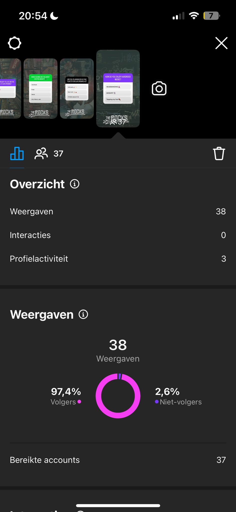
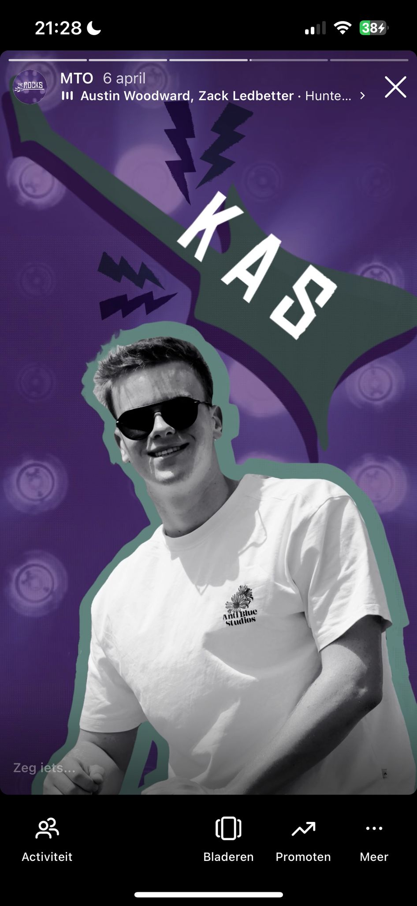
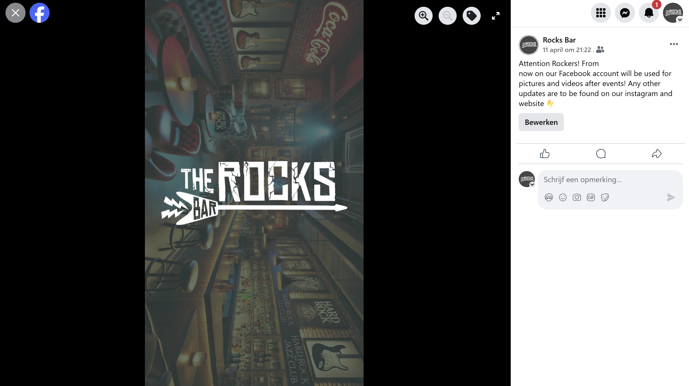

General Information
This branded website is publicly available at https://the-rocks-bar.github.io/The-Rocks-Bar/.
This website was created by:
- Alexane Linder (232192)
- Hailey Janssen (233835)
- Kas Primo (235041)
- Marloes Klaasse (234578)
Content
Please clarify here the match between students and pieces of content. Make sure that you provide a link to the correct page within the website
| # | Student ID | Value | Name and link of content |
|---|---|---|---|
| 1. | Alexane Linder (232192) | Social media copywriting + homepage |
|
| 2. | Hailey Janssen (233835) | About us |
|
| 3. | Kas Primo (235041) | Values & Vision + contactpage |
|
| 4. | Marloes Klaasse (234578) | Sign up page + social media section |
|
Persona
Values and Explanations
Acceptance
We do not care where you are from, how you look, who you love, or what stage of life you are in, if you are here for the Hardrock music, you belong. That energy reflects one of our main values of The Rocks Bar. This place is built for everyone, for the die-hard Hardrock fans but also for the curious people that are just discovering the Hardrock genre. We leave judgment at the door. Everyone deserves a place where they feel safe, where their music taste is respected, and where they feel totally free to be themselves. That place is at The Rocks Bar. That is what our brand is all about.
Accessibility
Rock was not born in fancy studios, it came from garages, basements, and people just trying to be heard. We have not forgotten that. At The Rocks Bar, we keep that spirit alive by making sure our space, our events, and our vibe are open to everyone. That means fair pricing, inclusive lineups, and treating every guest like they matter, because they do. Whether it is someone’s first gig or their hundredth, they all get the same energy, the same respect, and the same chance to have an unforgettable night. And we are always working on making our space physically accessible too. The Rocks Bar is all about inclusion.
Connection
One of our values is that it is all about having a real connection. Music has this incredible way and power of bringing people together. At The Rocks Bar, we make space for those moments, we want to build a close community. It could be locking eyes with a stranger during a guitar solo, bonding over your favorite band tee, or making a new friend at the bar. Our events are not just about what is happening on stage, they are also about what happens in the crowd, too. Every night, we build community through the shared passion for Hardrock music and with that we create an honest connection.
Discovery
Hardrock music is still growing, still changing, and still surprising us. That is why discovery is such a big part of what The Rocks Bar is all about. Our stage welcomes both, the originals and the icons but also the upcoming artists. Our line-up blends the classic Hardrock music with the new upcoming Hardrock music. We want our guests to relive old favourites and discover new Hardrock music and artists. Whether it is a band you have never heard before or a song that makes you feel something unexpected, discovery is what keeps Hardrock alive.
Passion
At the end of the day, it all comes down to sharing the same passion for Hardrock music. Every single person on our team from the bartenders behind the bar to the ones booking the bands, lives and breathes Hardrock music. You will feel it in the sound, in the service, in the energy of the room. We know how powerful music can be, how it lifts people up and brings them together. That is what keeps us going. And it is what we pour into every night at The Rocks Bar.
Explanation of our Brand Name
After speaking with hard rock fans, we found out that they are missing a place to connect. That's why we created The Rocks Bar. It's a space where real hard rock fans come together to enjoy music and the atmosphere without going over the top. The Rocks is simple, yet very bold and fun. Imagine saying, "Let's go to The Rocks," and everyone instantly knows where the night is headed.
Our Logo
When we had to design the logo for our brand, we looked for something that looks cool and edgy but is still playful. That's how we came up with the final logo. With the big and clear letters, you can see the name of the bar. The letters were edgy by themselves but still incomplete. With the cracks in the letters, we make it a little more extreme but at the same time refer to “stones”. You can already see and feel the vibe by looking at the logo. Then, to make the design a bit more playful, we added an element and colors. The guitar because people come together through music. Guitar is a big part of hard rock music. The colors make the logo a little less bland. You will see these colors in the design of the website too; it’s part of the brand.
Production
Design Elements
Color Choices
We have chosen a color palette that may be somewhat new to a hard rock fan. It has edgy and playful colors that still fit well within the target audience. The Rocks Bar wants to stand out, embrace new colors and not the standard red and black you know from hard rock.
- #2B292B This is a dark grey color. It matches the other colors on the color palette. We added a dark color because it is familiar to hard rock fans, shows the edgy and mysterious side that hard rock has. It also represents confidence.
- #502A75 This dark shade of purple represents the mystery and creativity of The Rocks Bar. This color feels timeless and powerful for our brand.
- #9B52E2 A lighter shade of purple that adds contrast while keeping the same creative and enigmatic energy. It brings balance to the darker tones while maintaining the boldness of the brand.
- #22998A The darker green symbolizes life and energy. It adds power to the brand and feels like natural energy for the music and the hard rock fans.
- #41C2B2 This lighter green vibrancy to the life and energy of the other shade. It's sharp and stands out, that is what we want for our brand.
Font Choices
Chinese Rock
Heading 1: This font is used for the logo and H1 headings. We were looking for an edgy and brave font that matches the brand. This is perfect for it especially because with the crack that we added, it really gives that rock look.
Mono45 Headline
Heading 2: This is a clean version of the Chinese Rocks font that we use for H2 headings. This font keeps the website cleaner when we use this for the titles and subtitles. It is still a bigger font that matches the rest of the style on the website.
Momochidori
Body text: For the body text we chose this font. This font is good for the website because it is easy to read, but it still got a squarer and wider look. It is a neat font, yet it still looks more bold than regular body text fonts.
User Interface Patterns
The website uses a couple UI patterns to create an easy and intuitive user experience.
Navigation bar: The site has top navigation bar, including a dropdown menu to help visitors access pages easily. This structure follows predictable navigation patterns, making it easy to explore the site.
Buttons: There are two button styles used for clarity and hierarchy. The solid purple buttons highlight the main calls to action (like Sign Up), while the white outline buttons are used for secondary actions such as Read More. This makes the difference in importance for the buttons clear.
Sign upCarousel: On the homepage, a photo carousel is used in the Impressions section. This follows the card-stack UI pattern and allows users to browse visuals quickly, giving them a vibe of the bar.


Cards: Information is organized using card components, in sections like the agenda and about us areas. These make content easy to scan and digest.


Grid layouts: The site layout uses a responsive grid system, ensuring that content is well-aligned and balanced across screen sizes. This reinforces clarity and flow, especially when switching between desktop and mobile views.
All patterns help to create a user-friendly website, where everything is easy to navigate and information is simple to find.
Structure of the Navigation and Content
Underneath you can find the navigation flowchart, which is the structure of this website. Since an important valua of the Rocks Bar is accessibility, the goal was to make the website as easy and organized as possible. We tried to reach this by having a clear focus for each page: Agenda has the schedule with the upcoming events, About Us information about the brand, Contact has of course contact information and Sign Up allows visitors to sign up. This is very clear and straightforward which makes the site easy to navigate. The homepage is to attract attention and inform visitors what the Rocks Bar is all about, and at the same time give them an idea what kind of information can be found on the website. By using buttons such as: Read More, and See full Agenda, we try to activate people to continue looking around on our website. In the design you can also see clear sections with different pieces of information. We tried to make this as clear as possible by giving each section a different background colour. This way the content is distributed in a simple way, which allows visitors to scan the screen fast and find the information they need without having to look around too much.
The Rocks Bar brand is edgy, bold, and passion focused. The heavy fonts, gritty images, and dark colour scheme embody the hard rock vibe. At the same time, with the brighter, softer, colours green and purple it creates a more unique and open vibe. While it is still full of passion and looks bold, it is also more accessible for all kinds of hard rock fans, instead of just the stereotypical hard rock hooligan.
The design of the website aligns with the style guide we use throughout our entire communication channels, so also social media. It is recognizable and easy to navigate through. The website promotes engagement via CTAs to sign up, follow on social media, and check the agenda. These elements support a conversion-driven marketing approach, encouraging both fans and artists to take action. The main goal of the website is for fans to sign up for an event, and for artists to come perform at the bar. By making the site simple and organized with CTAs, we try to make the conversion rate as high as possible. This also highlights our unique value proposition: making it as accessible as possible for everyone. Our goal is to make hard rock something everyone can enjoy locally. This is what we try to convey with our text, images and overall design.
Credits
Here you can find the credits that we used to create and design the website:
- This template has been the only one used in the creation of this website (buas-media-interactive/prj4-group-template)
- Video by Cover Free Footage (Link to Pixabay)
- Video by Joshua Malic (Link to Pixabay)
- Video by Surprise (Link to Pixabay)
- Video by Vimeo-Free-Videos (Link to Pixabay)
- Video by Iconikmg (Link to Pixabay)
- Video by Tibor Janosi Mozes (Link to Pixabay)
- Picture agenda header by Daniel Portillo (Link to Pexels)
- Picture about us header by Pixabay (Link to Pexels)
- Picture contact header by Stephan Neimeier (Link to Pexels)
- Picture sign up header by Leslie del Moral (Link to Pexels)
- Picture events on the signup page by Cord Alleman (Link to Unsplash)
- Carrousel picture by Frankie Cordoba (Link to Unsplash)
- Carrousel picture by Jaehyun Choi (Link to Unsplash)
- Carrousel picture (Link to Unsplash)
- Carrousel picture by Frankie Cordoba (Link to Unsplash)
- Vision statement picture by Yabee Eusebio (Link to Pexels)
- Event poster Pestilence by Heber Vazquez (Link to Pexels)
- Event poster ACDC Tribute night by Aleksandr Neplokhov (Link to Pexels)
- Event poster ACDC Tribute night by Levi Damasceno (Link to Pexels)
- Event poster ACDC Tribute night by Matthew Baur (Link to Pexels)
- Event poster Cranky in a cup by Anya Juárez Tenorio (Link to Pexels)
- Event poster Cranky in a cup by Cottonbro studio (Link to Pexels)
- Event poster Queen Tribute night by Vishnu R Nair (Link to Pexels)
- Event poster Queen Tribute night by Pixabay (Link to Pexels)
- Event poster The Insiders by Rick Han (Link to Pexels)
- Event poster The Insiders by Ruslan Rozanov (Link to Pexels)
Testing Report
Participants of our Testing
The main focus of our target audience is hard rock fans, most likely 25 to 45 years old. Our testing participants are between these ages. They also use social media and websites a lot in their daily life, so they have experience in navigating themselves. The participants live in or around Breda where the bar also will open.
The Test Setting
All the tests were done in person. Every person in our group will ask the participant to complete a few tasks and describe how they think and feel about this. This way it is very direct, and we know exactly how the participant navigates through the website and their opinion.
The Test Protocol
Before recording the test, we give participants an explanation of what to expect without recording it. We explain that they could use the Think Aloud method, this means they must talk aloud along with the steps they do during the tasks they have to perform. Afterwards, they know they will get a question about how they experience this and whether there could be any improvements.
When we start the recording, we will do a short introduction and start with the tasks. These are the tasks that they had to complete:
After each task we had a follow-up question for them to know how they experienced this. These are the questions that we asked:
Recording these tasks was important so we could see how the participant moves around the website. But we have found that once we ask the follow-up question, they are more open and give their opinions.
Testing Results
The participants completed the test successfully. But there was one task that almost all the participants had trouble with. This was finding out how they could partner up with our company. We looked at this to make it better.
Even though they all found their way through the website, well they still had some suggestions to make the website better:
We are taking this into consideration to improve this on our website.
Marketing
Context of campaign and promotional activities
We are The Rocks Bar, a Hardrock bar where people can come together to enjoy/make music together and find a new local community in Breda. For our promotion campaign, lasting from 20.03.2025 - 16.04.2025, we wanted to reach out to our target audiences of 25-35 and 35-45. To be more specific, we wanted to let our brand be known, have the target audience find our website through social media. With the end goal of having them visit our physical location at the opening of our bar. The channels we used Instagram and Facebook, as those are the most used social medias in our target audiences. Our communication message for this campaign is:
Music has the power to connect us all, and at The Rocks, we make sure everyone has access to it. Our bar is intended to bring people together over great tunes, local talent, and unforgettable moments. Join us in making Hard Rock music more accessible—visit us online or stop by our venue for an experience like no other!
To consider this campaign a success, we have decided on these objectives:
It was a difficult process, but in the end we got a 100 followers. It was hard to start from zero, and it took us a little longer than we expected to gain followers. Next to meeting our reach objective, our account got 2.3 thousand views. Thus, we reached quite some people, who then are able to check out our website and visit our physical location, even if they did not follow us.
We also succeeded in our affect objective. We got around 10 engagements on average per post, and a lot more clicks than expected – 57 clicks on average per post. The reels we posted helped a lot with this average, so it is safe to state that posting relatable videos makes our audience feel more connected and therefore want to engage more with our brand.
Picture posts statistics:
Video posts statistics:
Story statistics:
For our response objective to be a success, we would need 37 engagements (74*50%) and we got 40 engagements! This is more than we expected. We can conclude with this that our goal to get our target audience to be excited to visit our website and physical location is met. It can also be concluded that we made clear why our brand is worth looking into.
Here are some examples of that engagement, next to comments and likes:
Our response objective was changed halfway through the process; our first objective was to have 50% of our followers visit our website through the link posted on our social media. As we had some difficulties getting the website up online, it would not be online for long enough to measure this objective. This is why we decided to change the objective to something measurable, but still with the same response in mind. Which is to know if people are interested in our brand and visiting the physical location at our opening.
This means that we achieved all three objectives.
We do have to note that these objectives were only reached on Instagram, we have gotten no engagement at all on our Facebook account. As we realised that, we have stopped posting on Facebook on 11.04.2025 and made a final post stating that our Facebook will be used only to post pictures after events, so our visitors have easy access to the pictures.
Learning Points
As a group we learned a few things from running a promotional campaign. We learned that posting regularly – meaning basically everyday – helps a lot with getting engagement and followers. When we had a few days after one another where we posted every day, by normal posts and stories, we got more engagement. It is pretty difficult to come up with enough content to be posted almost daily, which also resonates with our brand and the target audience. A key learning point here is to be prepared earlier in advance, to look at what we are going to post for every two weeks and not for every few days. Also looking at our statistics, the reels we posted did the best, we should have made more videos looking back at it. We also learned that our older target audience, which we thought would be active on Facebook, is not interested in a social media page. Next time we will have to do more research to see what kind of promotion has the best success, like print advertising. Nevertheless, we had a fun and meaningful experience managing social media accounts as if we were a real brand.
Future Planning
If we were to continue this campaign for another 8 weeks, it would look like this:
17.04.2025 - 24.04.2025 (first week): posting every day until our opening, posting funny reels, a preview of the band playing at the opening and getting our followers even more familiar with our brand.
24.04.2025 - 12.06.2025 (last 7 weeks): posting about the events that happened, promoting new events coming up, posting funny reels, posting questions about the Hardrock genre to keep fans engaged and post about the website so our followers will visit the website.
We noticed that these posts and tactics helped grow our following the most and kept our followers engaged. Next to what we would post, all posts would continue with captions using wordplay to stay in the Hardrock theme and we would stay using hashtags as our posts also reached non-followers this way.
Professionalism
Our posts and stories on Instagram and Facebook in chronological order. We posted the same things on Facebook as we did on Instagram, up until the post of 09.04.2025 where we decided to stop using Facebook for our promotional campaign. Here are the links for our Instagram and Facebook. Links to the specific posts can be found in our content calendar.
-
Posted on 20.03
-
Posted on 23.03
-
Posted on 25.03
-
Posted on 28.03
-
Posted on 29.03
-

Posted on 01.04
-
Posted on 03.04
-
Posted on 05.04
-

Posted on 05.04
-

Posted on 05.04
-

Posted on 05.04
-
Posted on 05.04
-
Posted on 07.04
-
Posted on 09.04
-
Posted on 09.04
-

Posted on 09.04
-
Posted on 09.04
-
Posted on 09.04
-
Posted on 09.04
-
Posted on 10.04
-

Posted on 11.04
-
Posted on 11.04
-
Posted on 12.04
-
Posted on 13.04
-
Posted on 14.04
-
Posted on 15.04
-
Posted on 16.04
Management
Lean Canvas
Fill in at least 2 bullet points per building block and according to the rubrics.
Problem
- List your top 3 problems you solve for your target group(s).
- Describe briefly how the problems are solved now (existing alternatives).
Solution
- Outline the brand solution(s) you have for the above problem(s).
Customer segments
- List your target customers and/or users.
- Describe briefly the characteristics of your ideal customer (early adopter, brand persona).
Unique value proposition
- With a single, clear compelling message, state why your brand idea is different and worth paying attention to.
Unfair advantage
- List the aspect(s) of your brand that cannot easily be copied, also called your sustainable competitive advantage(s).
Channels
- List your main path to customers.
- How do you reach them? What channel(s) do you use.
Key metrics
- List the key numbers that tell you how your brand experience is doing.
- For example amount of users, downloads, visitors, subscriptions, sales etc. Numbers you are able to measure.
Revenue streams
- List your sources of revenue: describe the revenue model and the (different) revenue stream(s).
Cost structure
- List your main costs: define the fixed and variable costs.
- Calculate the cost per unit.
Services/products
- State what your product and/or service is and how this contributes to your unique value proposition.
- Clarify the fit between the product/service developed and the brand identity/brand image.
Validation of Assumptions
Write a reflection on the choices made in creating choosing the trademark, including an analysis of the existing alternatives.